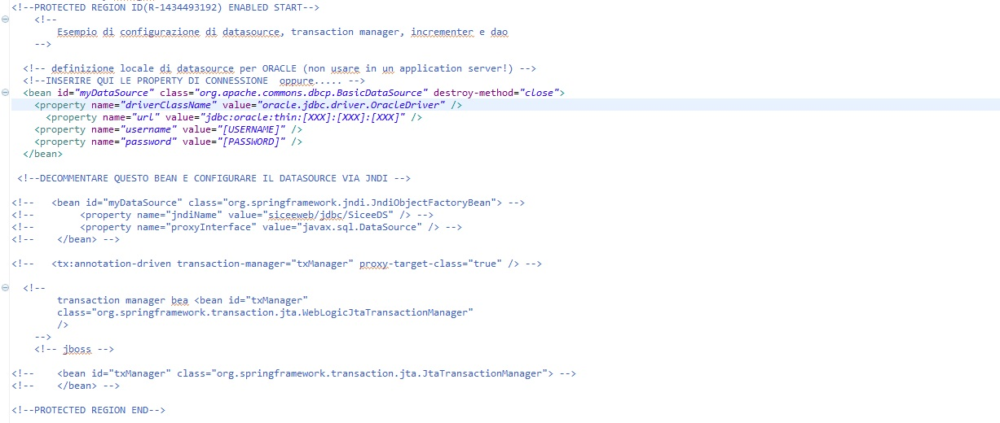

INTEGRAZIONE TRA DATAGEN E N SERVIZI APPLICATIVI tramite Spring
Ipotizziamo di dover generare N servizi applicativi con servicegen che utilizzino, per la realizzazione della business logic, un unico strato di accesso ai dati (DAO) generato con datagen.
I passi necessari per l'integrazione tra SERVICEGEN e DATAGEN sono:
- modellazione tramite servicegen di N serviceImpl (1 per ogni servizio applicativo)
- modellazione strato accesso dati tramite datagen
- scrittura file di workflow per integrazione
- configurazione manuale dei file spring prodotti dal generatore
Per i punti 1 e 2 si può far riferimento al tutorial INTEGRAZIONE TRA DATAGEN E SERVICEGEN tramite Spring, mentre per i 3 e 4 è necessario applicare alcuni accorgimenti.
Scrittura file di workflow
Nel file di workflow dovremo:
- Nel richiamo della cartuccia di generazione di servicegen impostare il parametro
useExternalDaoBeans a false. In questo modo verrano generati N daoBeans vuoti, uno per ogni servizio applicativo. All' interno della loro regione protetta referenzieremo il dao-bean comune.
- Nel richiamo della cartuccia datagen impostare opportunamente
basePackage e daoBeansFileName in modo che le classi di accesso dati vengano generate sotto il package business e il dao-beans nel package business.dao
Ad esempio:
basePackage="it.csi.testprod.testcomp"
daoBeansFileName="src/java/it/csi/testprod/testcomp/business/dao/dao-beans.xml"
Configurazione manuale file di spring
Il generatore produrrà:
- i file di configurazione Spring [nomeServizio]beanContext.xml e [nomeServizio]dao-beans.xml (uno per ogni servizio applicativo)
- il file di configurazione comune dao-beans.xml per lo strato di accesso ai dati
Terminata la generazione dovremo:
- inserire nella regione protetta del dao-beans.xml i riferimenti al dataSource

- configurare il [nomeServizio]dao-bean.xml in modo che referenzi il dao-beans.xml prodotto da datagen.
Ad esempio, all' interno della regione protetta del [nomeServizio]dao-bean.xml potremmo inserire il seguente import:
< import resource="classpath*:it/csi/testprod/testcomp/business/dao/dao-beans.xml"/>